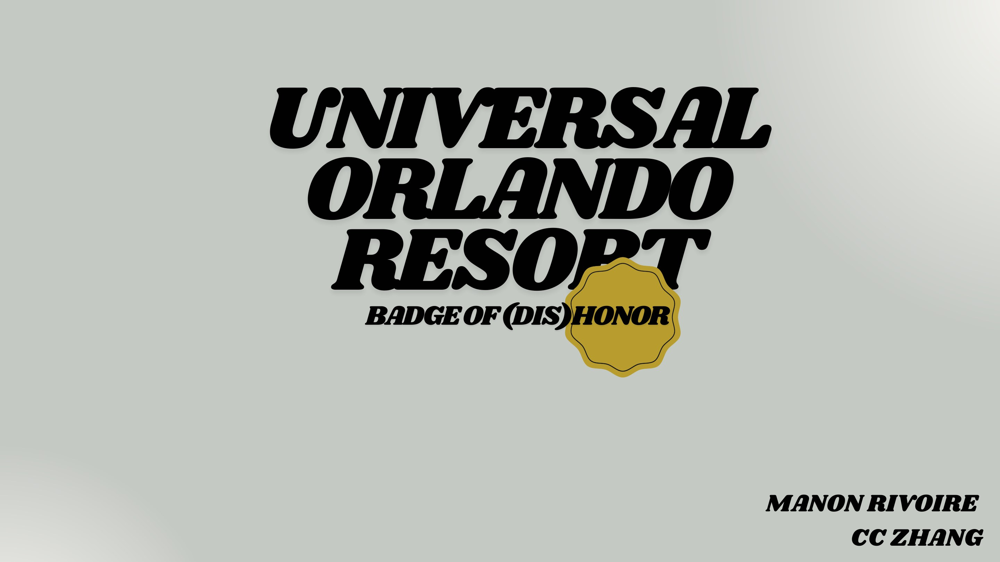
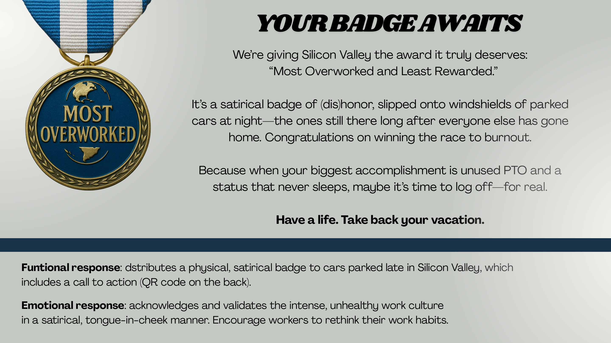
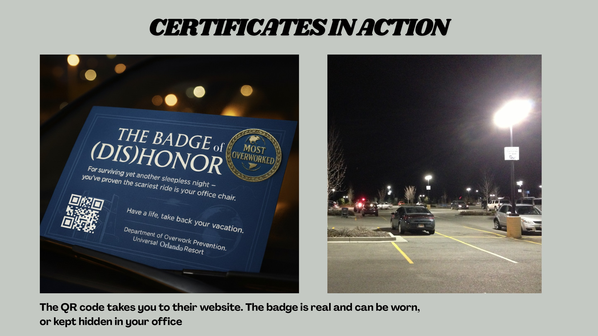

Universal Orlando Resort
A satirical award for the people winning the race to burnout.

Silicon Valley's most committed non-vacationers.
Unused PTO, late-night status updates and cars still parked long after dark make burnout visible. The audience does not need another wellness reminder; it needs its unhealthy achievement reflected back.

Your Badge Awaits.
Cars left overnight receive a satirical 'Most Overworked and Least Rewarded' badge of dishonor, congratulating their owners for winning a race nobody should want to finish.
An award that works as evidence.
The physical badge can be worn or hidden in the office, while a redesigned certificate makes the joke feel official enough to earn attention on the windshield and online.

Have a life. Take back your vacation.
A QR code on the back turns recognition into action, leading recipients from a late-night parking lot to a Universal Orlando vacation invitation.
From thought
to touchpoint.
- Guerilla concept
- Physical badge
- Certificate design
- Direct-response mechanic
- Campaign copy
“Satire opens the door because it acknowledges the behavior before asking the audience to change it.”